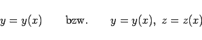
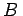

Inhalt Index DeskTop Bronstein

 Integralrechnung Kurvenintegrale Kurvenintegrale 2. Art Berechnung der Kurvenintegrale 2. Art
Integralrechnung Kurvenintegrale Kurvenintegrale 2. Art Berechnung der Kurvenintegrale 2. Art


Mit den Gleichungen
|  | (8.117) |
für den Integrationsweg im Falle einer ebenen bzw. räumlichen Kurve und mit den Abszissen a und b der Punkte A und , wobei die Forderung a < b nicht mehr unbedingt zu erfüllen ist, tritt in den Formeln (8.112a) bis (8.114) die Abszisse x an die Stelle des Parameters  .
.